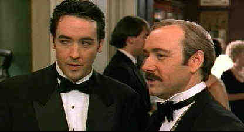

Midnight in the Garden of Good and Evil/C+,A
Warner/1998/155m/
WS,ANA 1.85There are moments during Clint Eastwood's latest film that one might mistake it for a travelogue extolling the eccentricities of Savannah, Georgia, the would-be star of Midnight in the Garden of Good and Evil. The tale of the murder trial of rich and influential Jim Williams from the best selling book by John Berendt is a meandering adaptation that lacks a definitive tone. The story is greatly condensed and the author becomes a prominent character by the name of John Kelso in John Lee Hancock's(A Perfect World)screenplay.
 |
Spacey hosts Cusack at "The" party.©Warner |
Despite too many precious
moments, the strength of Kevin Spacey in the role of Jim Williams and Jack Thompson as his
attorney Sonny Seiler make for good screen entertainment. This is not one of John Cusack's
best roles as writer Kelso. He seems superfluous to the story. Alison Eastwood is very
effective as a love interest for Cusack, but it's just another strand of plot that goes
nowhere and dissipates in the overall lackluster screen treatment. And believe me, there's
far too much screen time given to The Lady Chablis, a colorful Savannah transvestite
playing herself in the movie.
"Midnight" is a crackerjack DVD package, chuck full of
delightful surprises. Following the successful similar packaging of L.A. Confidential on
DVD, Warner has a map introducing the places and people of Berendt's Savannah tribute.
Sonny Seiler, who plays Judge White in the film, is featured prominently in discussing the
characters that people the film and some details of the actual murder case.
The anamorphic 1.85 transfer is quite stunning, with amazing
depth and intensely vibrant colors. Detail is consistently sharp and even in dark scenes
like the cemetery setting, it's all clear on this DVD. The Dolby Digital 5:1 surround
information is delicate and involving.